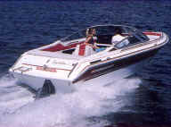
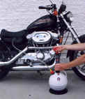
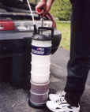
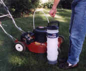
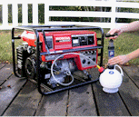

Applications
PELA oil extractors are popular with do-it-yourselfers and professionals alike. Common uses include:
-
BoatsInboards, 4-stroke outboards, gensets, bilge water.
-
Outdoor power equipmentLawnmowers, generators, pumps, etc.
-
Powersports vehiclesMotorcycles, snowmobiles, ATVs, karts, PWCs.
-
Cars & 4×4sTransmissions, differentials, coolant, etc. Note: Will not work if the dipstick pipe has a sharp bend, which prevents the extractor tube from reaching the oil pan.
-
Industrial machineryCompressors, hydraulic oil, etc. Note: For hydraulic oil, you must use the largest diameter tube.
-
Trapped waterFrom plumbing, fish tanks, etc.
PELA in the field

Boats & marine 
Motorcycles 
Cars & 4×4s 
Lawnmowers 
Generators